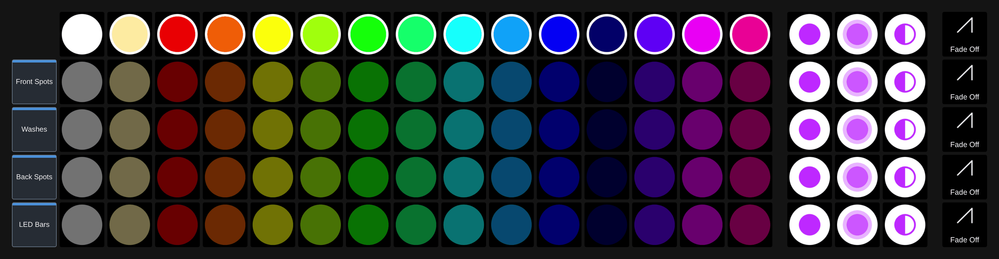
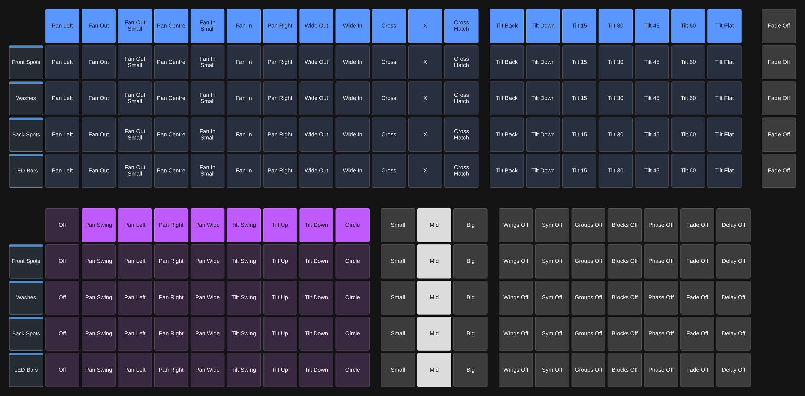
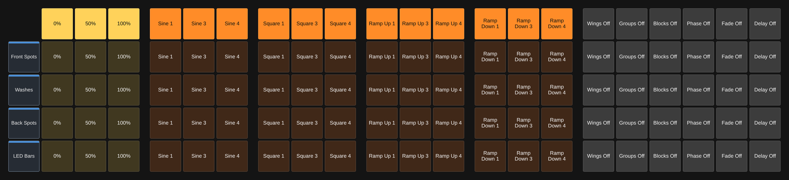
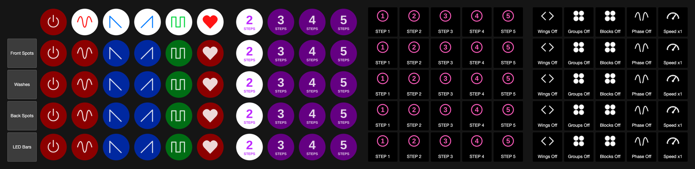
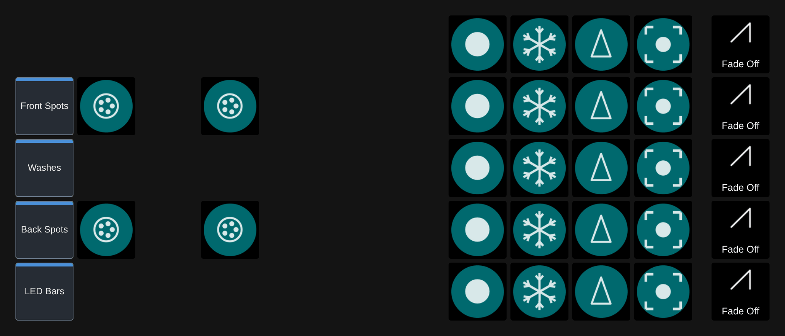
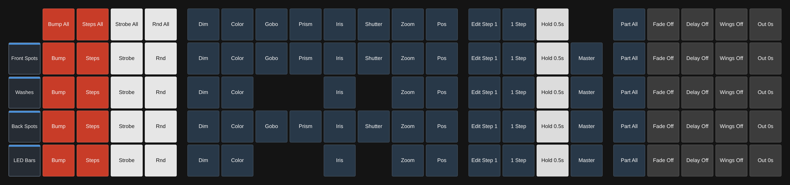
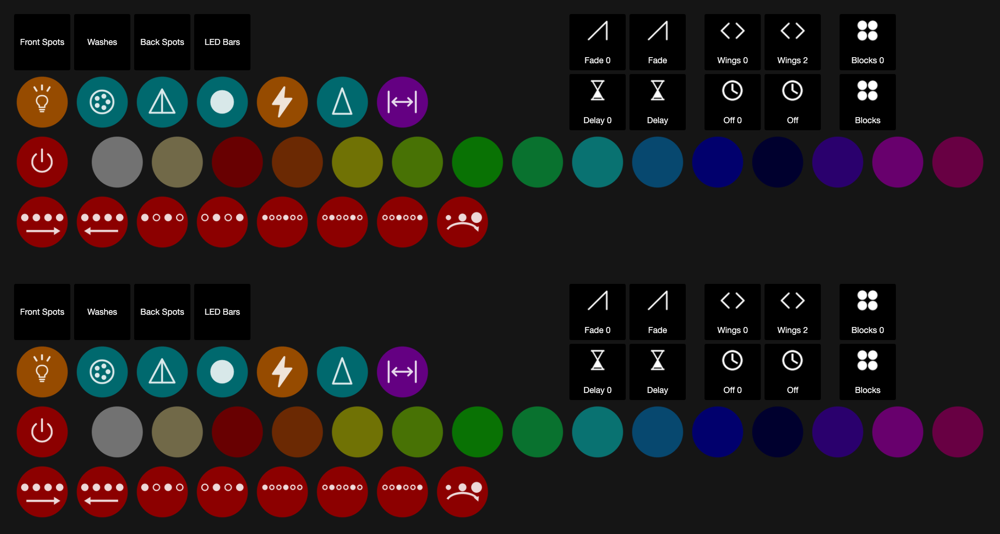

FireSystem Minis
Small grandMA3 plugins that each build one part of a busking show and nothing else. Pick your groups, press Build, and you get a layout of buttons that runs without the plugin.
FS PresetsEvery preset the other tools use, numbered from 1 in each pool
FS Colour Picker15 colours per group, Normal / Pastel / Dark
FS Position PickerPans, tilts and position FX with sizes
FS Dimmer FXLevels and dimmer chases per group
FS Colour FXColour chases from up to 5 picked colours
FS Gobo BeamGobo, prism, spin, shutter, iris, frost, zoom, focus
FS BumpsBump, Go+ step and strobe keys with live look pickers
FS LOSLive Output System bumps, StartShow style
FS MastersFireSystem's executor page 1: keys, group masters, speed masters
Install
- Download a release. Each tool is one
.xmland one.lua; the zip has them all. - Copy the tools you want into
gma3_library/datapools/plugins/. On onPC that's~/MALightingTechnology/gma3_library/datapools/plugins/; on a console, a USB stick with the same folders. - Import each tool's XML into the Plugins pool, e.g.
FSColourPicker.xml. - Click the tool once. It asks for the groups (up to 8) and where things go, then builds.
Made for grandMA3 2.4 and newer. When you update a tool, import it again in the Plugins pool: ReloadAllPlugins doesn't pick up new files.
How they work
- Build-only. A tool makes ordinary MA objects (sequences, macros, MAtricks, appearances, a layout) and stops. The show doesn't need the plugin afterwards, and the main FireSystem plugin doesn't need to be there at all.
- One file each. Every tool carries its own copy of the FireSystem code it needs, so tools can be mixed and run in any order.
- Shared presets. The pickers play FS Presets' presets. If one is missing, the picker makes it, with the same number FS Presets would give it.
- Buttons are recipe sequences. A picker button is a sequence whose cue holds a recipe line (Group At Preset, with the row's MAtricks). Change a preset or a group and the button plays the new values. Prefer Cue Appearance shows what's picked.
- An ALL row. Every layout has a row on top that sets every group row at once.
- Goto lists. Pickers with many options are one button with the Goto action: a tap opens the list to pick from, and the button shows the pick.
- Safe rebuilds. Each tool only replaces objects carrying its own name prefix (
FS CP ...,FS BS ...). Anything else in its slots stops the build and gets listed.
FS Presets
FSPresets.xml
Builds the presets for the groups you pick, numbered from 1 in each pool. Tick the families you want; the numbers stay the same whichever you tick.
- All pool: phasers: Dimmer FX forms, Position FX, Fly In / Out, Zoom Sine, dimmer-chase strobes.
- Dimmer 1: 0-100 % and relative -100 to +100 % in 10 % steps.
- Position 2: pans, fans and tilts.
- Gobo 3: each fixture type's wheel slots, then gobo spin.
- Color 4: 15 colours as Normal, Pastel and Dark.
- Beam 5: shutter strobes, prisms and prism spin per fixture type, shutter Open / Strobe / Pulse / Random, Iris and Frost 0-100 %.
- Focus 6: zoom steps and Focus 0-100 %.
- Remake existing presets stores them all again, so fixtures added to a group since get their values.
FS Colour Picker
FSColourPicker.xml

- One button per colour per group; a row works like radio buttons.
- Normal / Pastel / Dark at the end of each row change the tint and replay the row's colour.
- Fade (Off, 1, 3, 5 s) on the row's own MAtricks.
FS Position Picker
FSPositionPicker.xml

- 12 pans and 7 tilts per group, with a position fade per row.
- 8 position FX with Small / Mid / Big and an FX Off button.
- MAtricks per row: Wings, Sym, Groups, Blocks, Phase, Fade, Delay.
FS Dimmer FX
FSDimmerFX.xml

- 0 %, 50 %, 100 %, then Sine, Square, Ramp Up and Ramp Down at 1, 3 and 4.
- One dimmer look per group at a time.
- The chases follow a speed master (Speed 1 by default).
FS Colour FX
FSColourFX.xml

- Forms: Sine, Ramp Down, Ramp Up, Square, and Heart (a fixed rainbow).
- 2 to 5 steps; each STEP is a Goto list of 15 colours in Normal, Pastel and Dark.
- Follows a speed master (Speed 3 by default).
FS Gobo Beam
FSGoboBeam.xml

- Gobo 1, Gobo Spin, Gobo 2, Prism, Prism Spin and Shutter come from each group's own fixture type.
- Iris, Frost, Zoom and Focus in 10 % steps, also on the ALL row.
- Spin: Stop, CW 1-3, CCW 1-3. Fade on the row's MAtricks.
FS Bumps
FSBumps.xml

- Keys (on while held): Bump, Strobe and Rnd per group; Bump All, Strobe All and Rnd All on top. The X-keys are left for FS LOS.
- Steps (Go+): each press plays the row's next step, up to 3 (Step Count). Each step has its own look; Edit Step picks which one the look pickers change. A step releases itself after Hold, so fast hits overlap.
- Master: puts a group you pick, such as the main fixtures of pixel cells, at Full with the bump and its steps.
- Bump look: each group's own preset, one line per look. Dim, Color, Gobo, Prism, Iris, Shutter, Zoom and Pos are Goto lists, and a change plays straight away, even mid-bump.
- Part: All, Odd, Even, Left, Right or a third of the group. Fade in, Delay and Wings spread it, Out is the release fade.
- Strobe / Rnd: Full plus the group's strobe or random strobe from its fixture profile (LED fixtures get a dimmer chase).
FS LOS
FSLOS.xml

- A Live Output System built the way grandMA3's StartShow does it, with 1 to 4 banks.
- Toggle groups in, pick a look, then hit a bump: All >, All <, Odd, Even, 1/3, 2/3, 3/3 or Chase.
- Dim, Gobo, Prism, Iris, Shutter, Zoom and Position are Goto lists: a tap opens every option (Dim 0-100 %, each gobo, prism and shutter slot of your fixtures). The 15 colours are one button each.
- Fade, Wings, Delay and Off time per bank. Change a look while a bump plays and it follows.
FS Masters
FSMasters.xml
- Fills an executor page the way FireSystem's page 1 is laid out, with columns 1 to 8 for the groups.
- 401–408 Rnd strobe, 301–308 Strobe (Flash), 201–208 group masters, 101–108 Bump (Temp), 110 Strobe All. The keys are FS Bumps' own, so run FS Bumps first.
- The X-keys 191–198 play FS LOS bank 1's 8 bumps (Temp); bank 2 goes on the next page's X-keys, and so on. Run FS LOS first.
- Speed masters 1–5 on 210, 209, 409, 410 and 211, and playback masters 1 and 2 on 209 and 210 of the next page, named as in FireSystem.
- An executor that holds something else is left as it is and listed.